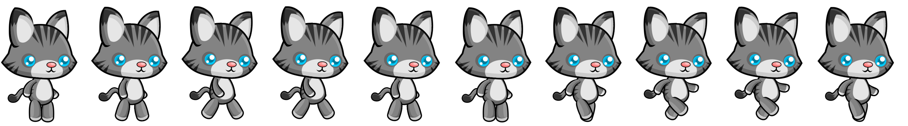
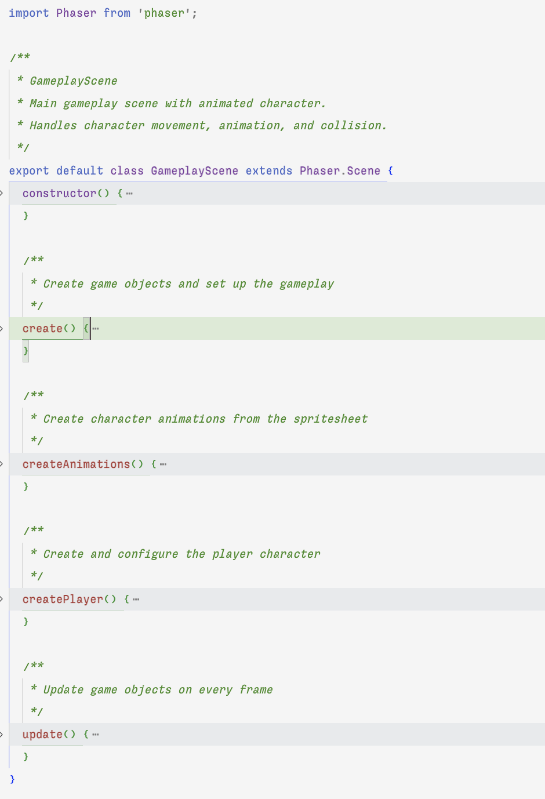

Overview
In this assignment, you'll create a side-scrolling character animation demo using Phaser 3. You'll implement a
character that can walk left and right, with animations that change based on movement state.
The starter code provides the project structure and configuration, but you'll need to create all the JavaScript
files and implement the character animation and movement logic yourself.
Getting Started
Step 1: Clone the Repository
Step 2: Install Dependencies
Install the project dependencies using npm:
npm install
This will install Phaser and other necessary packages defined in the package.json file.
Step 3: Explore the Project Structure
The starter repository has the following structure:
phaser-sprite-animation/
├── public/
│ └── assets/
│ ├── images/
│ └── background.png
│ └── character.png
│ └── sounds/
├── src/ (You'll create files here)
│ └── scenes/ (You'll create scene files here)
├── docs/ (Documentation and tutorials)
├── index.html (Main HTML file)
├── package.json (Project dependencies)
├── vite.config.mjs (Vite configuration)
└── netlify.toml (Netlify deployment config)
Step 4: Note Your Character Sprite Sheet
The background image and sprite sheet exists in your project's
public/assets/images/ directory.
Step 5: Start the Development Server
Start the Vite development server:
npm run dev
This will launch a local development server at http://localhost:3000.
Open dev tools to the console. You'll
see an error at first
since you haven't created any JavaScript files yet.
Step 1: Creating the Game Entry Point
First, you'll need to create the main entry point for your game.
1.1: Create the main.js File
Create a file at src/main.js with the following content:
// Import Phaser
import Phaser from 'phaser';
// Game configuration
const config = {
parent: 'game-container', // Use the container from index.html
type: Phaser.AUTO,
width: 1200,
height: 600,
backgroundColor: '#87CEEB', // Sky blue fallback color
physics: {
default: 'arcade',
arcade: {
gravity: { y: 0 }, // No gravity for horizontal movement
debug: false // Set to true to see collision boxes
}
},
// We'll add scenes to this array later
scene: []
};
// Create the game instance (but without scenes yet)
new Phaser.Game(config);
Study this code:
import Phaser from 'phaser'; - Imports the Phaser libraryparent: 'game-container' - ID of the HTML element for the game canvas
into the DOMtype: Phaser.AUTO - Lets Phaser choose the best renderer (WebGL or Canvas)width, height - Sets the game canvas dimensionsbackgroundColor - Sets a fallback color if no background image is loadedphysics: {default: 'arcade', ...} - Configures the physics enginescene: [] - An empty array that will hold our game scenesnew Phaser.Game(config); - Creates the game instance using our configuration
1.2: Testing Your Progress
Save the file and check your browser. You should see a blank sky-blue canvas. This confirms that your basic setup
is working.
Step 2: Creating Your First Scene
Now, let's create a title scene for your game.
2.1: Create the Title Scene
Create a new directory src/scenes if it doesn't exist already, then create a file at
src/scenes/TitleScene.js with this content:
import Phaser from 'phaser';
/**
* TitleScene
* The first scene shown when the game starts.
*/
export default class TitleScene extends Phaser.Scene {
constructor() {
// The key is used to reference this scene
super({ key: 'TitleScene' });
}
/**
* Preload assets for the game
*/
preload() {
// You'll add code here to load your character sprite sheet
}
/**
* Create game objects and set up the title screen
*/
create() {
// Add a title text
this.add.text(600, 200, 'Character Animation Demo', {
fontFamily: 'Arial',
fontSize: '48px',
color: '#ffffff',
stroke: '#000000',
strokeThickness: 4
}).setOrigin(0.5);
// Add instructions
this.add.text(600, 300, 'Press any key to start', {
fontFamily: 'Arial',
fontSize: '24px',
color: '#ffffff',
stroke: '#000000',
strokeThickness: 2
}).setOrigin(0.5);
// Listen for keyboard input to start the game
this.input.keyboard.once('keydown', () => {
// We'll start the gameplay scene once it's created
console.log('Key pressed - would start gameplay scene');
});
}
}
Study this code:
export default class TitleScene extends Phaser.Scene - Creates a new scene class that inherits
from Phaser.Scenesuper({ key: 'TitleScene' }) - Sets a unique key to identify this scenepreload() - Method where assets are loaded (currently empty)create() - Method where game objects are createdthis.add.text() - Creates text on screen with specified position and stylingsetOrigin(0.5) - Centers the text at its position coordinatesthis.input.keyboard.once() - Sets up a one-time event listener for keyboard input
2.2: Update main.js to Use the Title Scene
Now update src/main.js to import and use your TitleScene. Add these changes:
// Import Phaser
import Phaser from 'phaser';
// Import scenes
import TitleScene from './scenes/TitleScene'; // NEW: Import the TitleScene
// Game configuration
const config = {
parent: 'game-container', // Use the container from index.html
type: Phaser.AUTO,
width: 1200,
height: 600,
backgroundColor: '#87CEEB', // Sky blue fallback color
physics: {
default: 'arcade',
arcade: {
gravity: { y: 0 }, // No gravity for horizontal movement
debug: false // Set to true to see collision boxes
}
},
// Add the title scene
scene: [TitleScene] // CHANGED: Now includes TitleScene
};
// Create the game instance
new Phaser.Game(config);
What changed:
- Added an import statement for the TitleScene
- Updated the
scene array to include TitleScene
2.3: Testing Your Title Scene
Save both files and check your browser. You should now see your title text and instructions. The game won't
proceed when you press a key yet, since you haven't created the gameplay scene.
Step 3: Loading Your Character Sprite Sheet
Now, let's update the title scene to load the character sprite sheet that's included in the starter repo.
3.1: Understanding Sprite Sheet Dimensions
The repo includes a cat character sprite sheet (character.png) in the
public/assets/images/ directory. Before loading it, we need to understand its dimensions:
- The full sprite sheet has 10 frames of animation showing a cat walking
- The total image size is 3400×474 pixels
- Since there are 10 frames arranged horizontally, each frame is 340 pixels wide (3400 ÷ 10 = 340)
- The height of each frame is 474 pixels

The character sprite sheet with 10 frames (0-9) showing walking animation
Note: When using your own sprite sheets, you can determine the dimensions by:
- Opening the image in an image editor and checking its properties
- In VS Code, opening the image will show its dimensions in the status bar at the bottom
- Dividing the total width by the number of frames to get the individual frame width
3.2: Update the Preload Method
Now update the preload() method in src/scenes/TitleScene.js with these
changes:
preload() {
// Load a background image
this.load.image('background', 'assets/images/background.png');
// Load the character sprite sheet with calculated dimensions
this.load.spritesheet('character', 'assets/images/character.png', {
frameWidth: 340, // Width of each frame (3400px total width ÷ 10 frames)
frameHeight: 474 // Height of each frame
});
}
Study this code:
this.load.image() - Loads a simple background imagethis.load.spritesheet() - Loads the cat sprite sheet with specific frame dimensionsframeWidth: 340 - Specifies the width of each individual frameframeHeight: 474 - Specifies the height of each frame
3.3: Update the Create Method to Show the Background
To verify that your assets are loading, update the create() method to display a
background:
create() {
// Add background image, stretching to fit the game canvas
this.add.image(600, 300, 'background').setDisplaySize(1200, 600);
// Rest of your title scene code remains the same...
this.add.text(600, 200, '🐾 Character Animation 🐾', {
fontFamily: 'Arial',
fontSize: '48px',
color: '#ffffff',
stroke: '#000000',
strokeThickness: 4
}).setOrigin(0.5);
// ... other code
}
3.4: Testing Asset Loading
Save the file and check your browser. You should see the background image behind the title text. Be sure to check
the browser console for error details.
Step 4: Creating the Gameplay Scene
Now, let's create the main gameplay scene where your character will be animated and controlled.
4.1: Create the Gameplay Scene
Create a file at src/scenes/GameplayScene.js with this content:
import Phaser from 'phaser';
/**
* GameplayScene
* The main gameplay scene with animated character.
*/
export default class GameplayScene extends Phaser.Scene {
constructor() {
super({ key: 'GameplayScene' });
// Initialize properties
this.player = null;
this.cursors = null;
}
/**
* Create game objects and set up the gameplay
*/
create() {
// Add background image
this.add.image(600, 300, 'background').setDisplaySize(1200, 600);
// Create a static character (no animation yet)
this.player = this.physics.add.sprite(400, 450, 'character', 0);
// You could scale the player if needed
// this.player.setScale(0.5);
// Enable world bounds collision
this.player.setCollideWorldBounds(true);
// Create cursor keys for input
this.cursors = this.input.keyboard.createCursorKeys();
// Add escape key to end game
this.input.keyboard.on('keydown-ESC', () => {
console.log('ESC pressed - would go to game over scene');
});
}
/**
* Update game objects on every frame
*/
update() {
// We'll add character movement code here later
}
}
Study this code:
this.player = null; - Initializes player property in the constructorthis.physics.add.sprite() - Creates a sprite with physics enabledsetCollideWorldBounds(true) - Prevents the sprite from leaving the game areathis.input.keyboard.createCursorKeys() - Creates an object to handle arrow key inputthis.input.keyboard.on() - Sets up an event listener for a specific keyupdate() - A method that runs every frame (currently empty)
4.2: Create the Game Over Scene
Create a file at src/scenes/GameOverScene.js with this content:
import Phaser from 'phaser';
/**
* GameOverScene
* Displayed when the game ends.
*/
export default class GameOverScene extends Phaser.Scene {
constructor() {
super({ key: 'GameOverScene' });
}
/**
* Create game objects for the game over screen
*/
create() {
// Add background image
this.add.image(600, 300, 'background').setDisplaySize(1200, 600);
// Add semi-transparent dark overlay
this.add.rectangle(600, 300, 1200, 600, 0x000000, 0.5);
// Game Over text
this.add.text(600, 250, 'Game Over', {
fontFamily: 'Arial',
fontSize: '64px',
color: '#ff4444',
stroke: '#000000',
strokeThickness: 6
}).setOrigin(0.5);
// Restart instructions
this.add.text(600, 350, 'Press any key to restart', {
fontFamily: 'Arial',
fontSize: '24px',
color: '#ffffff',
stroke: '#000000',
strokeThickness: 2
}).setOrigin(0.5);
// Listen for keyboard input to restart
this.input.keyboard.once('keydown', () => {
this.scene.start('TitleScene');
});
}
}
Study this code:
this.add.rectangle() - Creates a semi-transparent overlay0x000000, 0.5 - Black color with 50% opacitythis.scene.start('TitleScene') - Changes to the TitleScene when a key is pressed
4.3: Update main.js to Include All Scenes
Update src/main.js to include all three scenes:
// Import Phaser
import Phaser from 'phaser';
// Import scenes
import TitleScene from './scenes/TitleScene';
import GameplayScene from './scenes/GameplayScene'; // NEW
import GameOverScene from './scenes/GameOverScene'; // NEW
// Game configuration
const config = {
parent: 'game-container', // Use the container from index.html
type: Phaser.AUTO,
width: 1200,
height: 600,
backgroundColor: '#87CEEB',
physics: {
default: 'arcade',
arcade: {
gravity: { y: 0 },
debug: false
}
},
// Add all three scenes
scene: [TitleScene, GameplayScene, GameOverScene] // CHANGED
};
// Create the game instance
new Phaser.Game(config);
What changed:
- Added imports for GameplayScene and GameOverScene
- Updated the scene array to include all three scenes in the correct order
4.4: Connect the Scenes
Update the TitleScene's input handler in TitleScene.js to start the GameplayScene:
// In TitleScene.js, REPLACE the keyboard event handler inside create()
this.input.keyboard.once('keydown', () => {
this.scene.start('GameplayScene'); // CHANGED: Now actually starts the game
});
Update the GameplayScene's ESC handler in GameplayScene.js to go to the
GameOverScene:
// In GameplayScene.js, REPLACE the ESC handler inside create()
this.input.keyboard.on('keydown-ESC', () => {
this.scene.start('GameOverScene'); // CHANGED: Now actually goes to game over
});
4.5: Testing Scene Transitions
Save all files and check your browser. You should now be able to:
- See the title screen
- Press any key to go to the gameplay scene with your static character
- Press ESC to go to the game over screen
- Press any key at the game over screen to return to the title screen
Test the complete cycle a few times to make sure all transitions work correctly.
Step 5: Creating Character Animation
Now, let's create an animation for the cat character's walking movement. To do that you will add a new method to
the GameplayScene class
Note: There is no required order to how methods must be placed in a class. Here is one
suggestion.

5.1: Create the Animation Method
Add a method to create animations in your GameplayScene.js file:
/**
* Create character animations from the sprite sheet
*/
createAnimations() {
// Walking animation using all 10 frames (0-9) from the cat sprite sheet
this.anims.create({
key: 'walk',
frames: this.anims.generateFrameNumbers('character', {
start: 0, // First frame
end: 9 // Last frame (there are 10 frames total, 0-9)
}),
frameRate: 10, // 10 frames per second
repeat: -1 // -1 means loop indefinitely
});
}
Study this code:
this.anims.create() - Defines a new animation in Phaserkey: 'walk' - Names the animation so we can reference it laterthis.anims.generateFrameNumbers() - Creates the sequence of frames from our sprite sheetstart: 0, end: 9 - Uses all 10 frames in the cat sprite sheetframeRate: 10 - Animation plays at 10 frames per secondrepeat: -1 - Animation will loop forever until stopped
5.2: Call the Animation Method and Create Player
Add code to create the player sprite and call the animation method from your create() method:
create() {
// Add background image
this.add.image(600, 300, 'background').setDisplaySize(1200, 600);
// NEW: Create animations
this.createAnimations();
// KEEP: your current player sprite
this.player = this.physics.add.sprite(400, 450, 'character');
// NEW: Scale down the player (the sprite is quite large)
this.player.setScale(0.5);
// Enable world bounds collision
this.player.setCollideWorldBounds(true);
// Rest of your create code...
// NEW: Play the walking animation to test it
this.player.anims.play('walk', true);
}
What changed:
- Added a call to
this.createAnimations() to set up the walking animation
- Created a player sprite with physics enabled
- Scaled the player to 50% size since the original sprite is quite large
- Started playing the 'walk' animation to test it
5.3: Testing Your Animation
Save your changes and check your browser. After navigating to the gameplay scene, you should see the cat
character with a looping walk animation. If the animation doesn't look right, check:
- Frame indices - make sure you're using the correct start and end values (0-9)
- Frame rate - try adjusting the frameRate value for smoother animation
- Scale - you may need to adjust the scale value if the sprite appears too large or small
Step 6: Organizing the Code
Let's improve the organization of our code by creating a dedicated method for the player creation.
6.1: Create a Player Creation Method
Add this new method to your GameplayScene.js file:
/**
* Create and configure the player character
*/
createPlayer() {
// Add player sprite at the left side of the screen
this.player = this.physics.add.sprite(170, 450, 'character');
// Scale the player down (the cat sprite is quite large)
this.player.setScale(0.5);
// Enable physics body
this.player.setCollideWorldBounds(true);
// Adjust the physics body size for better collision
// This creates a tighter collision box around the character
this.player.body.setSize(
this.player.width * 0.6, // 60% of the sprite width
this.player.height * 0.8 // 80% of the sprite height
);
// Center the physics body
this.player.body.setOffset(
this.player.width * 0.2, // 20% offset from left
this.player.height * 0.2 // 20% offset from top
);
}
Study this code:
setScale(0.5) - Makes the sprite 50% of its original sizesetCollideWorldBounds(true) - Prevents the cat from leaving the screenbody.setSize() - Creates a smaller collision box than the visible spritebody.setOffset() - Centers the collision box within the sprite
6.2: Update the Create Method
Now update your create() method to use this new method:
create() {
// Add background image
this.add.image(600, 300, 'background').setDisplaySize(1200, 600);
// Create animations
this.createAnimations();
// CHANGED: Create player using the new method
this.createPlayer();
// Set up input controls
this.cursors = this.input.keyboard.createCursorKeys();
// Add escape key to end game
this.input.keyboard.on('keydown-ESC', () => {
this.scene.start('GameOverScene');
});
// Add instructions text
this.add.text(600, 50, 'Use Arrow Keys to Move • Press ESC to End', {
fontFamily: 'Arial',
fontSize: '24px',
color: '#ffffff',
stroke: '#000000',
strokeThickness: 2
}).setOrigin(0.5);
}
What changed:
- Replaced the direct player creation code with a call to
this.createPlayer()
- Added instruction text to guide the player
- Organized the code into logical sections (background, animations, player, input, UI)
- The animation has been temporarily removed
6.3: Testing the Refactored Code
Save your changes and check your browser. The game should function the similar to before, but now with better
organized code. You should no longer see the cat with a walking animation. It's now positioned differently and
has
a more appropriate collision box.
Step 7: Adding Character Movement
Now let's make the cat character respond to keyboard input for movement and implement proper boundary collision.
7.1: Implementing the Update Method
Add this update() method to your GameplayScene.js file:
/**
* Update game objects on every frame
*/
update() {
const speed = 160; // Movement speed in pixels per second
const halfWidth = this.player.width * 0.5 * this.player.scale;
const worldWidth = this.scale.width;
// Reset horizontal velocity
this.player.setVelocityX(0);
// Handle left movement
if (this.cursors.left.isDown && this.player.x > halfWidth) {
this.player.setVelocityX(-speed);
this.player.setFlipX(true); // Flip sprite to face left
this.player.anims.play('walk', true);
}
// Handle right movement
else if (this.cursors.right.isDown && this.player.x < worldWidth - halfWidth) {
this.player.setVelocityX(speed);
this.player.setFlipX(false); // Normal orientation facing right
this.player.anims.play('walk', true);
}
// No movement or at edge
else {
// Stop animation and show first frame (idle pose)
this.player.anims.stop();
this.player.setFrame(0);
}
}
Study this code:
const speed = 160 - Controls how fast the character moveshalfWidth - Calculates half the width of the player sprite for boundary checkingthis.player.setVelocityX(0) - Resets horizontal movement at the start of each framethis.cursors.left.isDown - Checks if the left arrow key is pressedthis.player.x > halfWidth - Prevents moving past the left edge of the screenthis.player.setFlipX(true) - Mirrors the sprite horizontally when moving leftthis.player.anims.play('walk', true) - Plays the walking animationthis.player.anims.stop() - Stops the animation when not movingthis.player.setFrame(0) - Shows the first frame as a standing pose
7.2: Testing Character Movement
Save your changes and check your browser. Now you should be able to:
- Move the cat left with the left arrow key
- Move the cat right with the right arrow key
- See the cat stop and stand still when no keys are pressed
- See the cat flip horizontally to face the direction it's moving
- Notice the cat can't move beyond the edges of the screen
Try experimenting with different values:
- Change the
speed value to make the cat move faster or slower
- Modify the
setScale() value in the createPlayer() method to change the cat's size
Step 8: Adding an Idle Animation (Optional)
Currently, our cat just stops on the first frame when not moving. Let's add a proper idle animation to make it
more realistic.
8.1: Creating the Idle Animation
Update your createAnimations() method in GameplayScene.js to add an idle animation:
createAnimations() {
// Walking animation (existing code)
this.anims.create({
key: 'walk',
frames: this.anims.generateFrameNumbers('character', {
start: 0,
end: 9
}),
frameRate: 10,
repeat: -1
});
// NEW: Idle animation using just the first frame
// For a more complex idle animation, you could use multiple frames
// but our sprite sheet only has walking frames
this.anims.create({
key: 'idle',
frames: this.anims.generateFrameNumbers('character', {
frames: [0] // Just use the first frame for a standing pose
}),
frameRate: 10,
repeat: -1
});
}
Study this code:
- We're creating a second animation called 'idle'
- Instead of using a range of frames, we specify exactly which frame to use with
frames: [0]
- For more complex idle animations, you could use multiple frames like
frames: [0, 1, 2]
8.2: Using the Idle Animation
Now update your update() method to use the idle animation instead of just stopping:
// In the update() method, REPLACE this code:
// No movement or at edge
else {
// Stop animation and show first frame (idle pose)
this.player.anims.stop();
this.player.setFrame(0);
}
// WITH this code:
// No movement or at edge
else {
// Play idle animation instead of stopping
this.player.anims.play('idle', true);
}
What changed:
- Instead of stopping the animation and setting a specific frame, we play the 'idle' animation
- This approach is more flexible if you want to add a multi-frame idle animation later
8.3: Testing the Idle Animation
Save your changes and check your browser. When not pressing any movement keys, the cat should still appear to be
standing still, but it's now using the idle animation. The visual difference isn't noticeable in this case because
our idle animation only has one frame, but the code structure allows for more complex idle animations in the
future.
Step 9: Completing the Game
Now that we have all the core functionality implemented, let's review our complete GameplayScene.js
file:
import Phaser from 'phaser';
/**
* GameplayScene
* Main gameplay scene with animated character.
* Handles character movement, animation, and collision.
*/
export default class GameplayScene extends Phaser.Scene {
constructor() {
super({ key: 'GameplayScene' });
// Initialize properties
this.player = null;
this.cursors = null;
}
/**
* Create game objects and set up the gameplay
*/
create() {
// Add background image
this.add.image(600, 300, 'background').setDisplaySize(1200, 600);
// Create character walking animation
this.createAnimations();
// Add player sprite with physics
this.createPlayer();
// Set up input controls
this.cursors = this.input.keyboard.createCursorKeys();
// Add ESC key to end game
this.input.keyboard.on('keydown-ESC', () => {
this.scene.start('GameOverScene');
});
// Add instructions
this.add.text(600, 50, 'Use Arrow Keys to Move • Press ESC to End', {
fontFamily: 'Arial',
fontSize: '24px',
color: '#ffffff',
stroke: '#000000',
strokeThickness: 2
}).setOrigin(0.5);
}
/**
* Create character animations from the spritesheet
*/
createAnimations() {
// Walking animation
this.anims.create({
key: 'walk',
frames: this.anims.generateFrameNumbers('character', {
start: 0,
end: 9
}),
frameRate: 10,
repeat: -1 // -1 means loop indefinitely
});
// Idle animation
this.anims.create({
key: 'idle',
frames: this.anims.generateFrameNumbers('character', {
frames: [0] // Just use the first frame for standing pose
}),
frameRate: 10,
repeat: -1
});
}
/**
* Create and configure the player character
*/
createPlayer() {
// Add player sprite at the left side of the screen
this.player = this.physics.add.sprite(170, 450, 'character');
// Scale the player if needed
this.player.setScale(0.5);
// Enable physics body
this.player.setCollideWorldBounds(true);
// Adjust the physics body size if the sprite has empty space
// This creates a tighter collision box
this.player.body.setSize(
this.player.width * 0.6, // 60% of the sprite width
this.player.height * 0.8 // 80% of the sprite height
);
// Center the physics body
this.player.body.setOffset(
this.player.width * 0.2, // 20% offset from left
this.player.height * 0.2 // 20% offset from top
);
}
/**
* Update game objects on every frame
*/
update() {
const speed = 160; // Movement speed
const halfWidth = this.player.width * 0.5 * this.player.scale;
const worldWidth = this.scale.width;
// Reset horizontal velocity
this.player.setVelocityX(0);
// Handle left movement
if (this.cursors.left.isDown && this.player.x > halfWidth) {
this.player.setVelocityX(-speed);
this.player.setFlipX(true); // Flip sprite to face left
this.player.anims.play('walk', true);
}
// Handle right movement
else if (this.cursors.right.isDown && this.player.x < worldWidth - halfWidth) {
this.player.setVelocityX(speed);
this.player.setFlipX(false); // Normal orientation facing right
this.player.anims.play('walk', true);
}
// No movement or at edge
else {
// Play idle animation
this.player.anims.play('idle', true);
}
}
}
9.1: Testing the Complete Game
Save all your files and test your game thoroughly:
- Check that the title screen appears with the background and text
- Press any key to go to the gameplay scene
- Verify the cat appears and animates properly
- Test left and right movement
- Ensure the cat stops at screen edges
- Press ESC to go to the game over screen
- Verify you can return to the title screen
9.2: Understand the Code Structure
Take some time to review the complete code and understand how it's organized:
- Scene Management: The game is split into three scenes (Title, Gameplay, GameOver)
- Method Organization: We've broken the code into specific methods for different functions
- Player Setup: Player creation and configuration is contained in its own method
- Animation System: Animations are defined separately from the objects that use them
- Game Loop: The
update() method handles frame-by-frame logic
This modular approach makes the code easier to understand, maintain, and extend.
Step 10: Extending Your Game (Optional)
Now that you have a working character animation demo, consider adding some enhancements to make it more
interesting:
Visual Enhancements:
- Background Parallax: Create multiple background layers that move at different speeds as the
character moves:
// In create(), replace the single background with layers:
this.bg1 = this.add.tileSprite(0, 0, 1200, 600, 'sky').setOrigin(0, 0);
this.bg2 = this.add.tileSprite(0, 0, 1200, 600, 'mountains').setOrigin(0, 0);
this.bg3 = this.add.tileSprite(0, 0, 1200, 600, 'ground').setOrigin(0, 0);
// Then in update(), add:
// Move backgrounds for parallax effect (slower = farther away)
this.bg1.tilePositionX += 0.1; // Sky moves very slowly
this.bg2.tilePositionX += 0.3; // Mountains move a bit faster
this.bg3.tilePositionX += 0.5; // Ground moves the fastest
- Environmental Effects: Add particle effects when the cat runs:
// In create():
this.particles = this.add.particles('dust');
this.emitter = this.particles.createEmitter({
x: 0,
y: 0,
speed: { min: 20, max: 40 },
scale: { start: 0.4, end: 0 },
lifespan: 300,
on: false
});
// In update(), when moving:
// Update dust particles to follow feet
if (this.cursors.right.isDown || this.cursors.left.isDown) {
this.emitter.setPosition(this.player.x, this.player.y + 20);
this.emitter.on = true;
} else {
this.emitter.on = false;
}
Gameplay Enhancements:
- Vertical Movement: Add jumping capability:
// In update():
// Enable gravity
this.physics.world.gravity.y = 300;
// Handle jump
if (this.cursors.up.isDown && this.player.body.touching.down) {
this.player.setVelocityY(-330);
}
- Collectibles: Add items for the cat to collect:
// In create():
this.coins = this.physics.add.group({
key: 'coin',
repeat: 10,
setXY: { x: 100, y: 300, stepX: 100 }
});
// Add collision detection
this.physics.add.overlap(this.player, this.coins, this.collectCoin, null, this);
// Add collect function
collectCoin(player, coin) {
coin.disableBody(true, true);
this.score += 10;
this.scoreText.setText(`Score: ${this.score}`);
}
Audio Enhancements:
- Sound Effects: Add footstep sounds synchronized with animation:
// In create():
this.walkSound = this.sound.add('footsteps', { loop: true, volume: 0.5 });
// In update():
if (this.cursors.left.isDown || this.cursors.right.isDown) {
if (!this.walkSound.isPlaying) {
this.walkSound.play();
}
} else {
this.walkSound.stop();
}
- Background Music: Add music to each scene:
// In TitleScene create():
this.music = this.sound.add('title-music', { loop: true });
this.music.play();
// When switching scenes:
this.music.stop();
Choose at least one enhancement to implement to make your character animation demo more engaging. These are just
starting points - feel free to be creative and add your own ideas!
Step 11: Deployment
Once you're satisfied with your cat animation demo, it's time to deploy it to Netlify for others to play:
11.1: Building Your Game for Production
First, build your game for production to create optimized files:
npm run build
This command will:
- Bundle and minify your JavaScript files
- Optimize your assets
- Create a
dist/ directory with the production-ready files
11.2: Testing the Production Build
Before deploying, test your production build locally:
npm run preview
This will serve your built application locally, typically at http://localhost:4173. Verify that
everything works correctly in the production build, including:
- Scene transitions
- Character animation
- Movement and controls
- Any additional features you've added
11.3: Committing Your Changes to GitHub
Commit and push your completed project to GitHub.
11.4: Deploying to Netlify
Follow these steps to deploy your game to Netlify:
- Go to Netlify and sign in (or create an account)
- Click on "New site from Git"
- Choose GitHub as your provider and authorize Netlify
- Select your repository from the list
- The build settings should be automatically configured by the
netlify.toml file that's included in
your starter repo:
- Build command:
npm run build
- Publish directory:
dist
- Click "Deploy site"
Netlify will deploy your site and provide you with a URL where your game is accessible online.
11.5: Customizing Your Site
After deploying, you can customize your Netlify site:
- Change the auto-generated site name to something meaningful
11.6: Sharing Your Game
Once deployed, you can share your game with others by sending them the Netlify URL. Your cat animation demo is
now live on the web!
Step 12: Submission
To complete this assignment, submit the following:
12.1: Repository and Deployment URLs
- GitHub Repository URL: The link to your project's GitHub repository
- Netlify Deployment URL: The link to your live game on Netlify
12.3: Code Quality
Ensure your code meets these quality standards before submission:
- Comments: All methods and complex code blocks have descriptive comments
- Organization: Code is logically organized into methods with clear purposes
- Naming: Variables and functions have clear, descriptive names
- Functionality: All features work as expected without errors